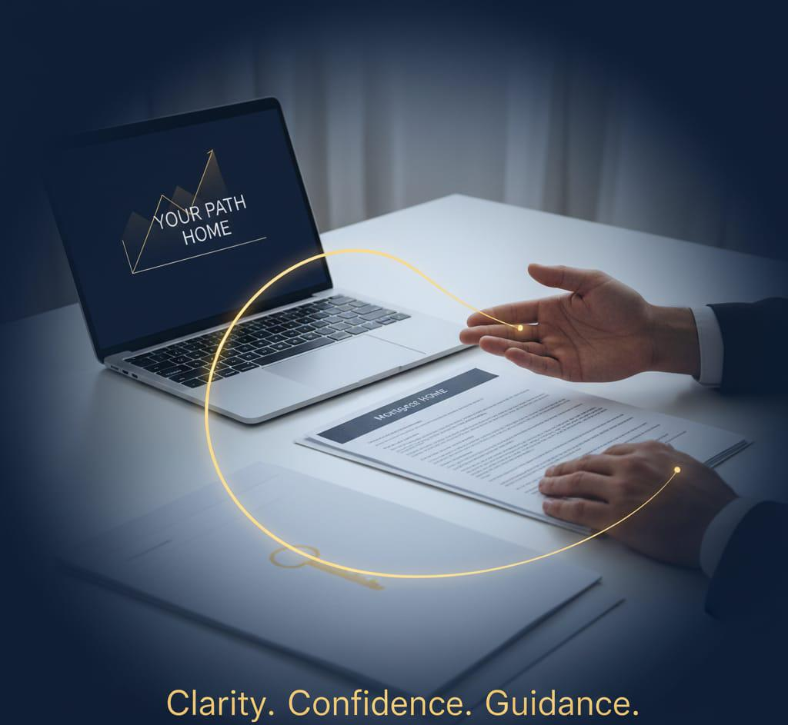

What should I do first as a first-time home buyer?
Start with a conversation about pre-qualification and pre-approval before you shop seriously. A review of your income, credit, assets, debts, and goals can help identify a realistic home-shopping range and the documents you may need. Pre-approval is not a guarantee that a loan will close, but it can help you understand the next step and present a stronger offer when you are ready.
It is also helpful to think about the kind of property you want, how long you expect to own it, and what monthly obligations already exist. Sharing that context early helps a mortgage professional explain which questions a lender may ask and which details still need review.
Pre-qualification and pre-approval are related but are not the same as a final loan approval. A pre-qualification discussion may use information you provide to outline possible next steps. A pre-approval review generally involves more documentation and lender review. The lender still must complete underwriting for the specific property and application before a loan can close.
